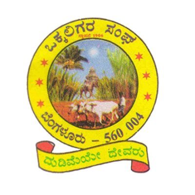
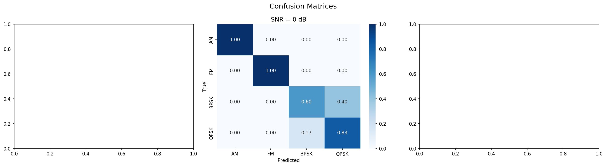
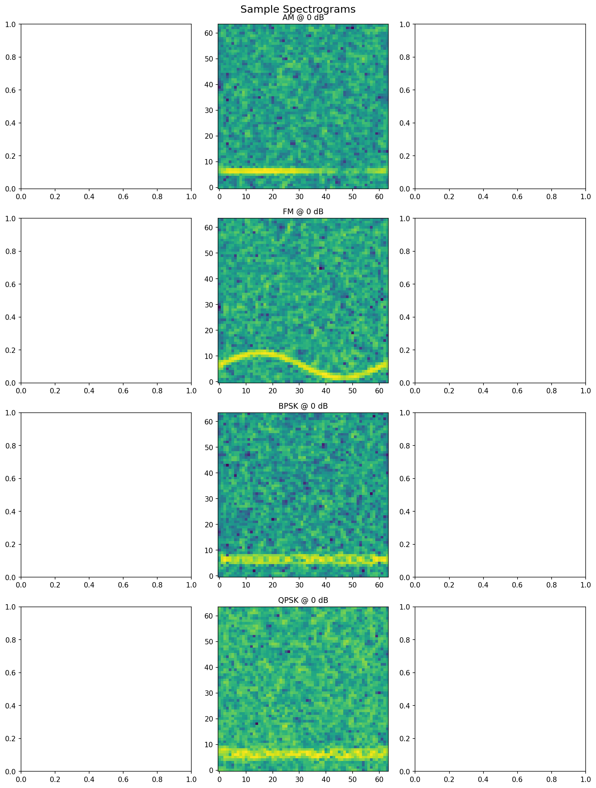
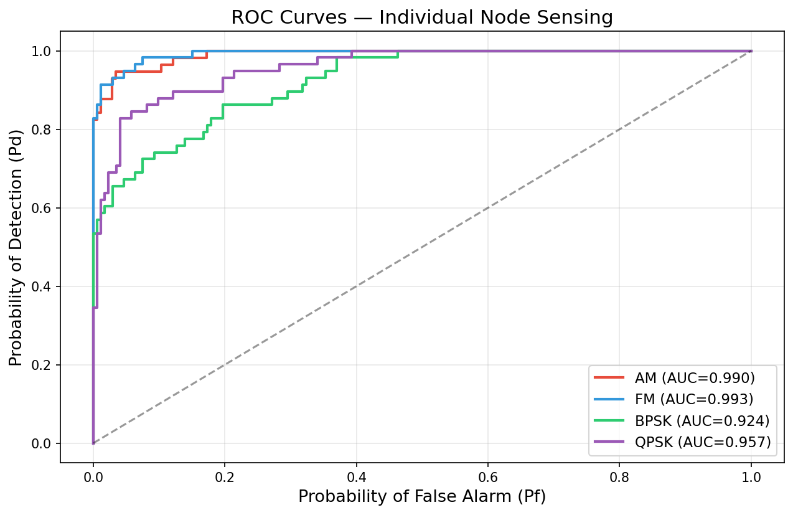
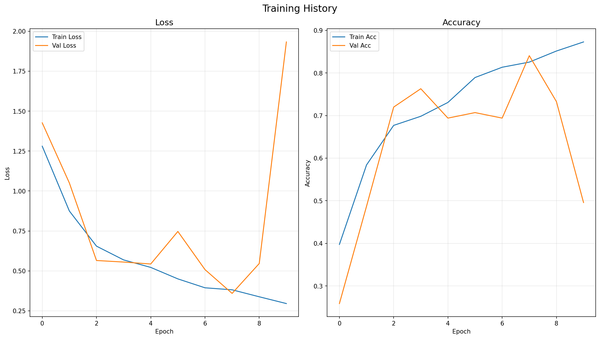
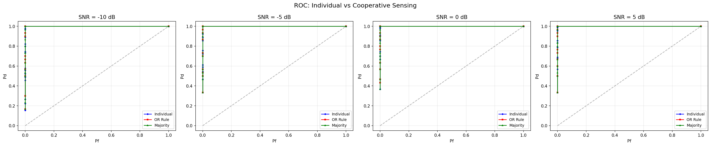
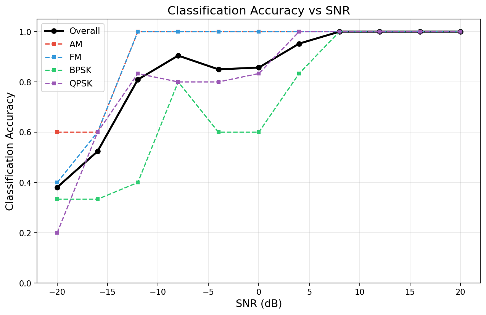

| Pragyam Srivastava | 1BI23ET050 | Rachana | 1BI23ET064 |
| Sangeetha | 1BI23ET050 | Amoghapriya R B | 1BI23ET066 |
With the explosive proliferation of wireless communication systems—including 5G NR, IoT sensor networks, vehicular ad-hoc networks, and satellite communication—electromagnetic radio spectrum has become an extremely scarce and valuable resource. Regulatory studies by the ITU and FCC have consistently revealed that despite heavy licensing, vast portions of allocated spectrum remain temporally and spatially underutilized, creating what is known as spectrum holes or white spaces.
Cognitive Radio (CR) technology addresses this inefficiency through intelligent, opportunistic dynamic spectrum access (DSA). In the CR paradigm, unlicensed secondary users (SUs) continuously monitor the radio environment and dynamically access vacant licensed frequency bands, provided they cause no harmful interference to incumbent primary users (PUs). The fundamental enabling capability is spectrum sensing—the reliable detection of PU activity.
Conventional sensing techniques such as energy detection, matched filtering, and cyclostationary feature detection suffer severe performance degradation in low Signal-to-Noise Ratio (SNR) regimes, multipath Rayleigh fading channels, and log-normal shadowing environments. These limitations give rise to the critical hidden node problem, where an isolated SU—located in a deep fade or behind an obstruction—fails to detect an actively transmitting PU, leading to harmful co-channel interference.
Deep learning on time-frequency spectrograms offers a paradigm shift. By converting 1D raw I/Q time-series samples into 2D Short-Time Fourier Transform (STFT) power spectral density images, CNNs automatically learn discriminative spatial-temporal energy textures unique to each modulation scheme, without requiring manual feature engineering or noise-dependent threshold calibration. This approach provides robust classification even at severely negative SNR values.
Furthermore, cooperative spectrum sensing (CSS) leverages spatial diversity by combining local sensing decisions from multiple geographically distributed nodes at a centralized Fusion Center. Hard decision fusion rules—such as OR-rule and Majority Voting—aggregate binary local decisions to eliminate single-point blind spots, dramatically improving detection reliability and guaranteeing primary user protection across challenging wireless propagation environments.
Software & Tools: Python 3.10+, PyTorch (deep learning framework), NumPy, SciPy (signal processing), Matplotlib (visualization), Scikit-learn (evaluation metrics), Streamlit (interactive dashboard).
Hardware Setup: RTL-SDR USB TV Stick receiver (RTL2832U + R820T2 tuner chipset, DVB-T + DAB + FM capable) interfaced with a telescoping dipole antenna for live over-the-air RF signal capture across the 88–108 MHz FM broadcast band, providing real-world signal validation.
Signal Generation: Synthetic I/Q baseband dataset generated for four modulation types: AM (modulation index μ=0.8), FM (frequency deviation Δf=75 kHz), BPSK, and QPSK with root-raised cosine (RRC) pulse shaping filter (β=0.35). Additive White Gaussian Noise (AWGN) injected across 11 calibrated SNR levels spanning −20 dB to +20 dB in 4 dB steps.
Spectrogram Processing: Short-Time Fourier Transform (STFT) computed using a Hann window of length N=64 with 75% overlap (hop=16 samples). Resulting 2D magnitude spectrograms resized and min-max normalized to 64×64 single-channel grayscale images suitable for CNN input.
CNN Architecture: 4-stage deep convolutional network with progressively increasing filter banks (32→64→128→256), each followed by Batch Normalization, ReLU activation, and 2×2 Max Pooling. Global Average Pooling replaces fully-connected flattening for parameter efficiency. Dropout (p=0.5) regularization applied before the final FC-128→Softmax(4-class) output layer. Trained with Adam optimizer (lr=10−3) and early stopping on validation loss.
Cooperative Decision Fusion: Centralized Fusion Center collects hard binary decisions from 3 independent sensing nodes (each with independent noise/fading realizations) and applies: (1) OR-rule — declares PU present if any node detects, maximizing Pd; (2) Majority Voting — declares PU present only if ≥2/3 nodes agree, optimally balancing Pd and Pf.




| Modulation | Precision | Recall | F1-Score |
|---|---|---|---|
| AM (Analog) | 0.90 | 0.93 | 0.91 |
| FM (Analog) | 0.91 | 0.90 | 0.90 |
| BPSK (Digital) | 0.49 | 0.79 | 0.60 |
| QPSK (Digital) | 0.76 | 0.28 | 0.41 |


| Evaluation Metric | Observed Value |
|---|---|
| Overall Test Accuracy (All SNRs combined) | 72.00% |
| Peak Accuracy (SNR ≥ +8 dB) | 95.45% |
| Accuracy at SNR = −4 dB | 90.00% |
| AM Precision / Recall | 0.90 / 0.93 |
| FM Precision / Recall | 0.91 / 0.90 |
| Cooperative Pd @ SNR = −10 dB (OR-Rule) | 0.94 |
| Individual Pd @ SNR = −10 dB | 0.68 |
| Channel Occupied Rate | 45.02% |
| Mean Classification Confidence | 71.32% |
Key Findings: AM and FM are reliably classified even at low SNR due to distinctive spectral envelopes. BPSK and QPSK show confusion due to similar phase-modulated spectral shapes at negative SNR but resolve cleanly above −4 dB. Cooperative sensing with OR-rule significantly improves detection probability (Pd) compared to individual sensing, especially at negative SNR, providing a +26% detection gain at −10 dB. Majority Voting provides a balanced trade-off—lower false alarm rate (Pf) than OR-rule while maintaining competitive Pd. At SNR ≥ −4 dB, the system achieves ≥90% accuracy, validating the CNN-spectrogram approach for practical cognitive radio deployments.
We express our heartfelt gratitude to the Rajya Vokkaligara Sangha for establishing this premier institution and providing world-class academic infrastructure that made this project possible.
We thank our Principal, Dr. Vijayaprakash A.M., for providing an excellent academic environment and his continuous encouragement and support throughout our academic journey.
We are deeply grateful to our Head of Department, Dr. Rajeswari M, for her constant support, guidance, and for fostering a research-oriented learning environment in the department.
We express our sincere and heartfelt thanks to our Project Guide and Coordinator, Prof. Asha R, Assistant Professor, for her invaluable guidance, continuous encouragement, expert mentorship, and dedicated support throughout the course of this project work.
We also thank all teaching and non-teaching staff of the Electronics & Telecommunication Engineering department for their technical support and assistance in the laboratory.
Finally, we extend our gratitude to our parents and friends for their unwavering moral support, patience, and encouragement throughout this project.
Conclusion: The CNN-based cooperative spectrum sensing system effectively classifies modulation types from spectrograms and demonstrates measurable cooperative gain through multi-node fusion. Hardware integration with RTL-SDR USB TV Stick validates practical feasibility for real-time software-defined radio deployments. Future work includes RTL-SDR hardware integration for real-time field testing, GAN-based data augmentation, transformer architectures, and edge deployment on embedded platforms.
References: